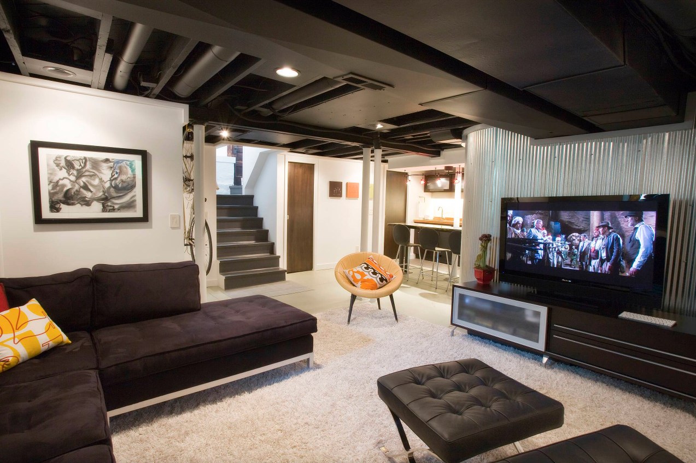

Home makeover tips and tricks
How to appropriately choose everything
Decorating the inside of your home can be both daunting and exciting so let your imagination run wild.
The first place to start when it comes to decorating your home is to draw inspiration from a range of sources. Get inspired for your dream interior, by watching home decorating shows, and browsing magazines, interior design websites and images online. Pinterest is a great place to find a wealth of inspiring images and tips.
Plan for success do not make the mistake of purchasing items or painting your walls without a plan in the first place.
The three most important concepts to consider for each room are the theme, colour scheme, and lighting mood.
Knowing what you want to achieve for each room will help create a harmonious end result. Buying things randomly can end up creating a miss matched and poor aesthetic.
To prevent impulse or regretful purchases, take photos of your room and look at it while shopping to help you visualise how things would look.
It is also a smart idea to take photos of items you see when shopping to think about overnight before making your decision to purchase, if you struggle to visualise interior design changes when your house is already cluttered, put your belongings away storage them somewhere before you take photos of your rooms, it is always much easier working from a clean slate.
Entrance / Foyer
Consider the entrance hall your opportunity to sweep guests off their feet. Whether visitors are welcomed into a soaring space crowned with a sparkling chandelier, or a cozy foyer with warm wood floors and a bouquet of blooms, the entryway sets the tone for the rest of your home.
Living Room
Nowadays, living rooms are the central focal point of the majority of homes. They are a multifunctional space where life flows day after day and where each member of the family can carry out their own activities: playing, reading, listening to music, watching television, even working and eating.
It is also a place where we gather with guests and where we choose to relax after a tiring day of work. Consequently, its layout and décor is highly important. The largest space is usually allocated, therefore it is necessary to plan all of the details well in order to create a comfortable, functional and, above all, welcoming atmosphere.
Bedroom
Bedrooms are the primary place of relaxation, where we all retire to take a good sleep and reset, away from the world and worries. The bedroom interior design is extremely important in order to provide that instant feel of relaxation and here are a few tips: the first thing that meets the eyes are the colours used on the walls, carpets and bed set, so they all must be soothing in pastel colours in order to provide a relaxing effect.
Kitchen
The kitchen of today serves many purposes often acting as the main family living space, entertaining area, informal dining room and home office in a single day. As a result it is important to consider the design of this space in aesthetic terms as it is in functional terms.
Because in the kitchen we make meals to replenish our strength, we make memories while we eat, drink and talk, we get warmed up by a cup of coffee or thee, refreshed with drinks, creative while baking or cooking, and where we give some treats to others and ourselves.
A place of so many utility is very important, so important that is called the heart of the home.
Mud Area / Laundry Room
>It may not be the most high traffic room in your house, but its role in your daily life is one of the most important. The laundry room has traditionally been a place to dump an assortment of clothes and shoes. But with an efficient and aesthetically pleasing design, it can be a room you actually enjoy going into, as we can't avoid doing this shores.
Basement

The basement one of the most verstile space at home nowadays we can create a huge variaty of purporses for it.
By doing a renovation or restyling we gain many squarefoots and never the less it can become one of your favorite spot in the house, often overlooked but not less importante, also a beautiful basement adds value to your home in your daily life,
and if you're planning on selling your house, this space well finished adds more real-state value to the property, and that is always a good thing.
The basement can be so much more than just a space to storage stuff, as it gives extra space to do, relax, enjoy and share more.
Garage
Garages keep your vehicles and tools safe and dry within a designated storage area. Not only will an attached garage provide protection from harsh weather, but it will also give you a space to store your tools, lawn mower and other belongings indoors, an attached garage is the perfect place to store them for year-round protection.
Garages are flexible and can be easily converted to an additional living space or storage area. Since attached garages can be insulated and heated, they can offer the option of an additional room without the cost of a complete home renovation, it could also be converted into a home office or even an at-home gym. The conversion options are endless.
Porch / Balcony

One of the most appealing benefits of having a porch, deck, balcony or patio to your home is how well it enhances your ability to enjoy the outside area.
The outside of your home is a defining feature. As the first thing your visitors will see as they approach your property, it's important for it to look appealing and inviting. An attractive and well-styled porch, deck, patio or balcony is a great way to enhance and extend the unique aesthetic qualities of your property, creating a practical and welcoming feeling.
Front and Backyard
Improving Curb Appeal installing proper landscaping can benefit the local ecosystem. When you incorporate trees and plants into your landscape design, this can have a superb impact on the surroundings around your house by cleaning the air and preventing soil erosion.
If you're looking for ways to increase your property's resale price, then remember that landscaping can add lasting value for less money than many interior renovations.
Enjoying the outdoor in your backyard is one of the greatest advantages that come from landscaping your home is the comfort and beauty that this bring to your outside areas. Adding hardscaping, pathways, plants, trees, and landscape lighting to your house add benefits by providing a more pleasant entertaining and provide the best setting for your family and friends to enjoy.